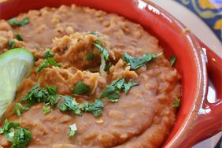

Quick and Easy Refried Beans

Description
This refried beans recipe is perfect for when you don't have all day to
make them and can't stand the canned ones. They're easy and delicious!
Ingredients
- 2 tablespoons canola oil
- 2 garlic cloves, peeled
- 2 (15 ounce) cans pinto beans
- 1 teaspoon cumin
- 1 teaspoon chili powder
- salt to taste
- ½ lime, juiced
Steps
- Heat canola oil in a heavy skillet over medium heat.
- Cook garlic cloves in hot oil, turning once, until brown on both sides, 4 to 5 minutes. Smash garlic cloves in the skillet with a fork.
- Stir pinto beans, cumin, chili powder, and salt into mashed garlic and cook until beans are thoroughly heated, about 5 minutes. Stir occasionally.
- Smash bean mixture with a potato masher to desired texture. Squeeze lime juice over smashed beans and stir until combined.